En Business Insider creemos que el talento mueve el mundo y queremos
reconocer a las personas y compañías que lo demuestran cada día.
Los premios Top Insiders, que estrenamos este año coincidiendo con
nuestro quinto cumpleaños en España, buscan reconocer a empresas que
destacan por su crecimiento, su espíritu innovador y su capacidad de
transformación, que son protagonistas en su sector y sirven de ejemplo
e inspiración a los demás.
Personas y empresas referentes, además, en los valores de nuestra
iniciativa Better Capitalism (sostenibilidad, inclusión, igualdad,
diversidad, compromiso con las personas, impacto positivo en la
sociedad), que también impulsamos desde Business Insider y Axel
Springer España.
Con este propósito, en Business Insider hemos seleccionado a compañías
de distintos tamaños y sectores que, en base a nuestro criterio, están
empujando el cambio e impulsando la disrupción.
Y ahora queremos que seas tú quien nos ayude, con tu voto, a elegir a
los Top Insiders de esta primera edición.
Los
candidatos
Estos son los 4 finalistas en cada una de las 10 categorías:
CEO Insider
Líderes que inspiran dentro y fuera de sus empresas.
María Dolores Dancausa
CEO de Bankinter
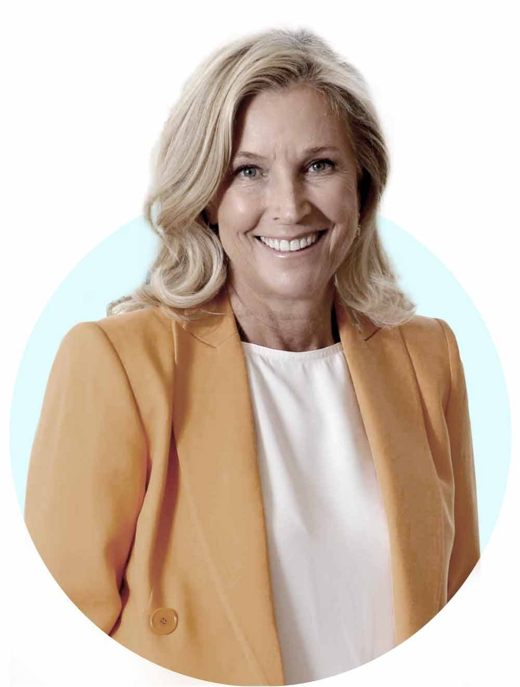
Click para ver más
+
María Dolores Dancausa
CEO de Bankinter
-
Gracias al crecimiento de la actividad comercial, ha
compensado con ingresos bancarios la aportación de Línea
Directa, que segregó en 2021.
-
Es el único de los grandes bancos que no realizó un
ajuste de empleo, su red de oficinas en España se
mantiene y ha elevado su plantilla global.
-
Es una de las empresas del Ibex 35 más avanzadas en lo
relativo a la presencia de mujeres en el consejo de
administración (45,5% del total).
Óscar Pierre
Fundador y CEO de Glovo
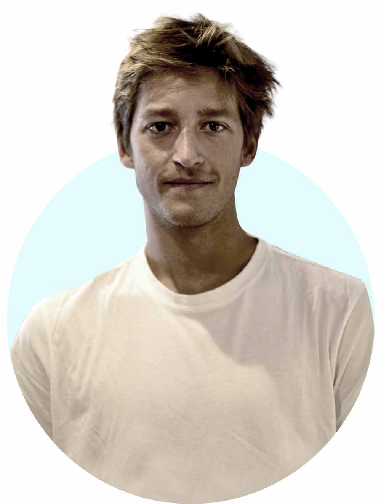
Click para ver más
+
Óscar Pierre
fundador y CEO de Glovo
-
En 2021, Glovo protagonizó unas de las mayores rondas en
la historia de las startups españolas.
-
El 31 de diciembre se vendió a Delivery Hero en una
operación valorada en 2.300 millones de euros. Es la
operación del año en el ‘delivery’.
- Óscar Pierre fundó Glovo en 2014, con 21 años.
Sabina Fluxà
vicepresidente y CEO de Grupo Iberostar
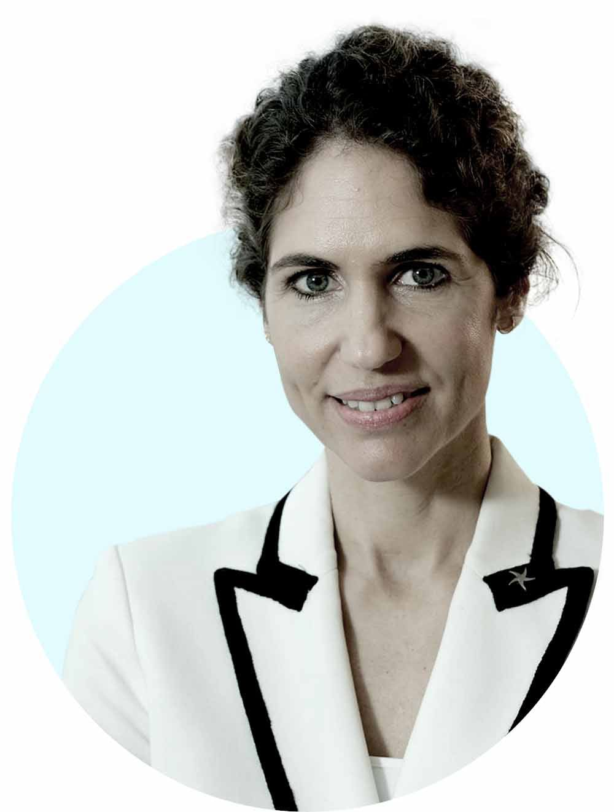
Click para ver más
+
Sabina Fluxà
vicepresidente y CEO de Grupo Iberostar
-
La cadena lanzó el primer proyecto de innovación abierta
del sector turístico en España, Hotel Digital, en 2021.
Ha desplegado 7 proyectos.
-
La cuarta hotelera española por habitaciones ha retomado
su expansión. Se reforzará en México y República
Dominicana y abrirá en Aruba.
-
Sus 97 establecimientos ya no utilizan plástico de un
solo uso y, en 2025, el consumo de pescado y marisco
será al 100% de fuentes responsables.
Jean-François Fallacher y Meinrad Spenger
CEO de Orange España y cEO DE MásMóvil
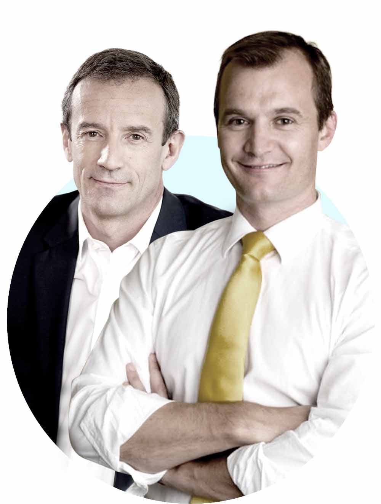
Click para ver más
+
Jean-François Fallacher y Meinrad Spenger
CEO de Orange España y cEO DE MásMóvil
-
Orange España y MásMóvil han acordado la creación de una
sociedad conjunta al 50% valorada en 19.600 millones de
euros.
-
La operación supone la creación del segundo jugador del
mercado de telecomunicaciones en España.
-
Jean-François Fallacher lidera Orange España desde 2020;
Meinrad Spenger fundó MásMóvil (Yoigo, Pepephone) hace
16 años.
Compañía del año
Grandes empresas y pymes que destacan por su crecimiento.
Bodegas José Pariente
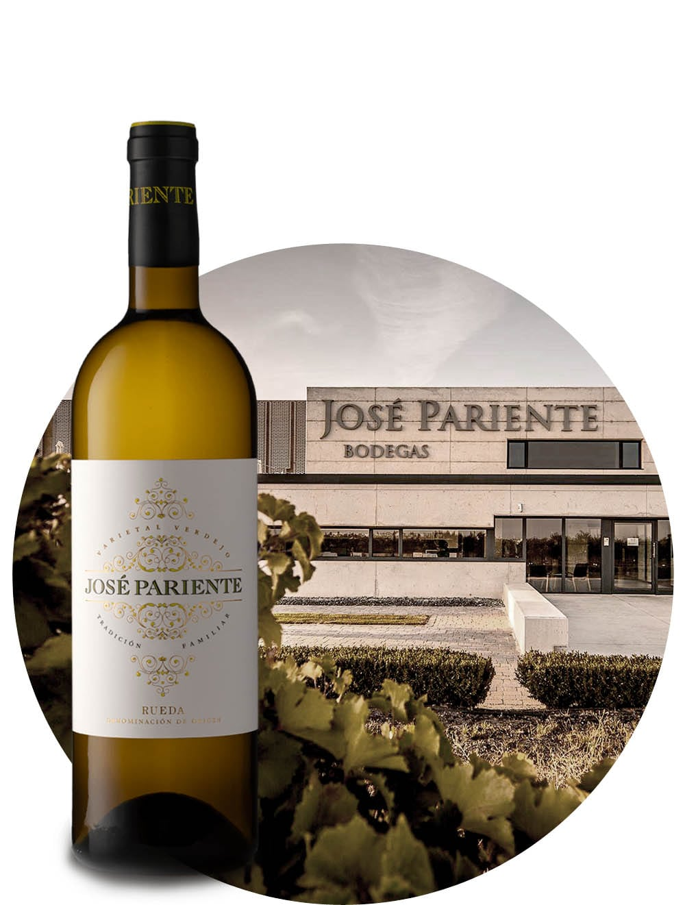
Click para ver más
+
Bodegas José Pariente
-
Esta empresa familiar, actualmente en la tercera
generación y con 25 años de historia, produce cerca de
800.000 botellas de vino blanco cada año.
-
Fue uno de los 3 vinos del menú que el chef José Andrés
preparó para la reciente Cumbre de la OTAN celebrada en
España.
-
Su producción es 100% ecológica desde hace 5 años y
busca crecer en Europa, Latinoamérica y Asia.
Clarity AI
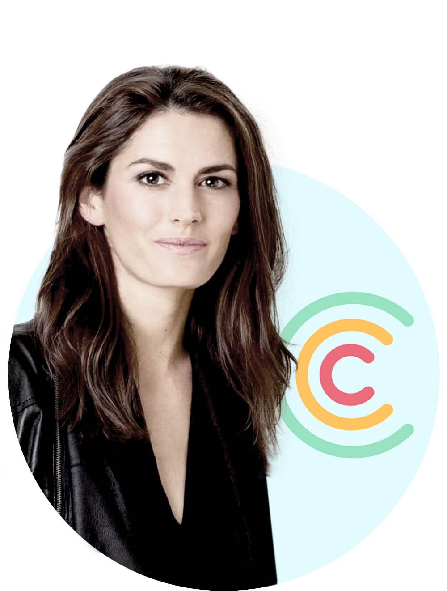
Click para ver más
+
Clarity AI
-
La empresa tecnológica desarrolla soluciones SaaS para
ayudar a los inversores a que optimicen el impacto
social de sus carteras de inversión.
-
BlackRock, SoftBank o el ex director de Diseño de Apple
han respaldado a la compañía.
-
Rebeca Minguela, su fundadora, fundó Blink, una app para
reservar hoteles a última hora en Europa, adquirida por
Groupon en 2013.
Mutua Madrileña
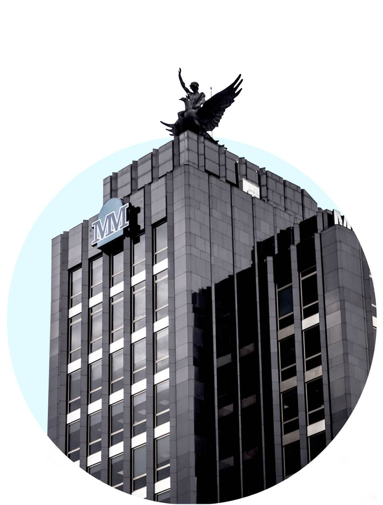
Click para ver más
+
Mutua Madrileña
-
Ha comprado el 50% del negocio de seguros y ha entrado
en el capital de El Corte Inglés en una operación
valorada en 1.105 millones de euros.
-
La aseguradora está en plena diversificación del
negocio: también ha entrado en Cabify y lanzará una
filial de ‘carsharing’.
-
Invertirá 150 millones hasta 2023 en su transformación
tecnológica: ya utiliza ‘machine learning’ para predecir
las necesidades de sus clientes.
Openbank
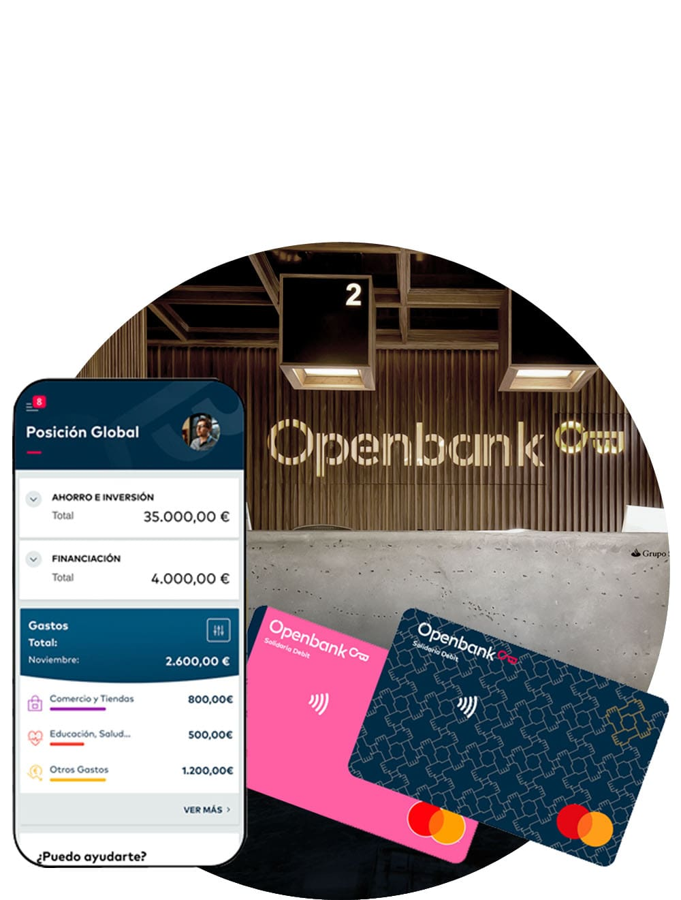
Click para ver más
+
Openbank
-
Es el banco 100% digital de Santander y tiene 1,7
millones de clientes en España, Portugal y Países Bajos.
-
Este año lanzará en España la plataforma Zinia, un
servicio que ofrece a sus clientes la posibilidad de
fraccionar los pagos en comercios.
-
Es el banco digital que más crece en nuestro país en el
último año, según la consultora Smartme Analytics.
Startup del año
Nuevas compañías digitales y líderes que reinventan el mundo.
Capchase
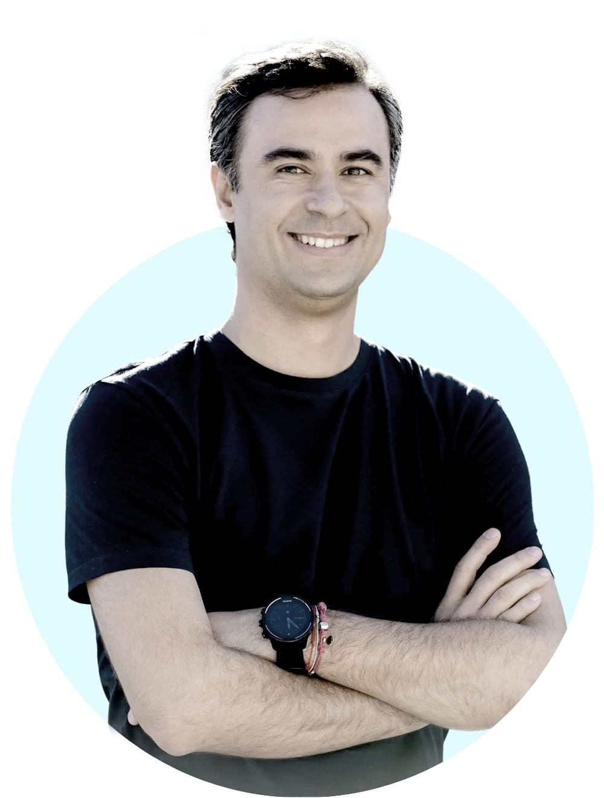
Click para ver más
+
Capchase
-
Fundada entre Boston y España, es una fintech que
financia a otras startups para impulsar su crecimiento.
-
Hasta la fecha, ha canalizado 1.500 millones de euros en
financiación.
-
Opera en 11 países (Norteamérica y Europa) y el pasado
julio captó 400 millones de euros.
Clikalia
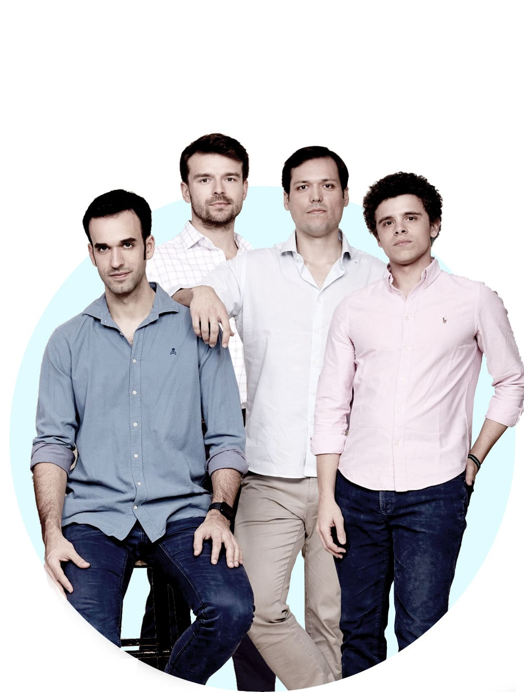
Click para ver más
+
Clikalia
-
En 2021, la ‘proptech’ protagonizó unas de las mayores
rondas en la historia de las startups españolas, al
levantar 460 millones.
-
Fundada en 2018, tiene un portfolio de más de 2.000
propiedades, opera en México y España, y acaba de entrar
en Portugal.
-
Quiere diversificar su negocio con nuevos productos,
como la financiación hipotecaria y los seguros.
Jobandtalent
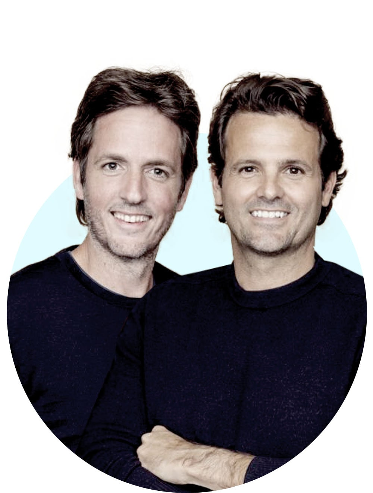
Click para ver más
+
Jobandtalent
-
Unicornio español valorado en más de 2.000 millones de
euros en su última ronda, levantada a finales de 2021.
-
Gestiona todo el proceso de selección y contratación de
las empresas, incluyendo contratos y nóminas.
-
Están impulsando su internacionalización con compras en
Estados Unidos (InStaff y JumpWork) y Noruega (JobZone).
South Summit
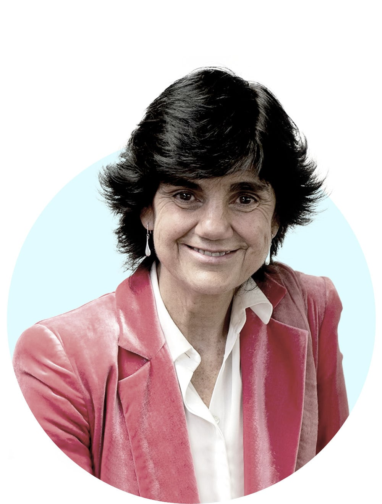
Click para ver más
+
South Summit
-
Es el mayor evento de emprendedores del sur de Europa.
En su última edición participaron 3.000 empresas de 120
países y 4.000 startups.
-
Maria Benjumea es la impulsora de South Summit, que este
año ha cumplido su décimo aniversario.
-
Emprendedora en serie, fundó su primera empresa en 1980
—una galería de arte con servicios de restauración—.
Posteriormente, lanzó Infoempleo.
Dispositivo tecnológico
Productos innovadores que están cambiando nuestro día a día.
Apple Watch Ultra
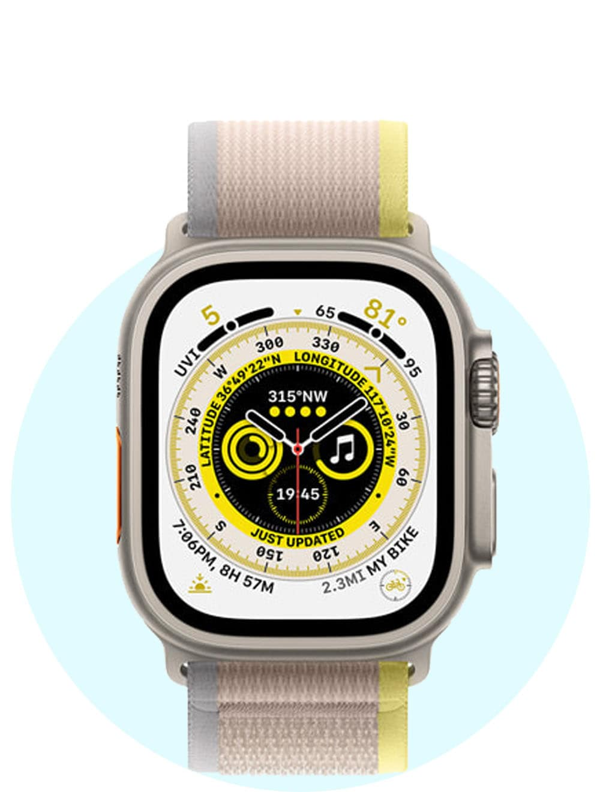
Click para ver más
+
Apple Watch Ultra
-
Es el primer reloj de Apple adaptado para deportes
extremos como el alpinismo o el submarinismo.
-
Mejora considerablemente la batería para durar hasta 3
días.
-
Su pantalla es más grande y con más brillo que nunca.
Samsung Galaxy Z Flip4
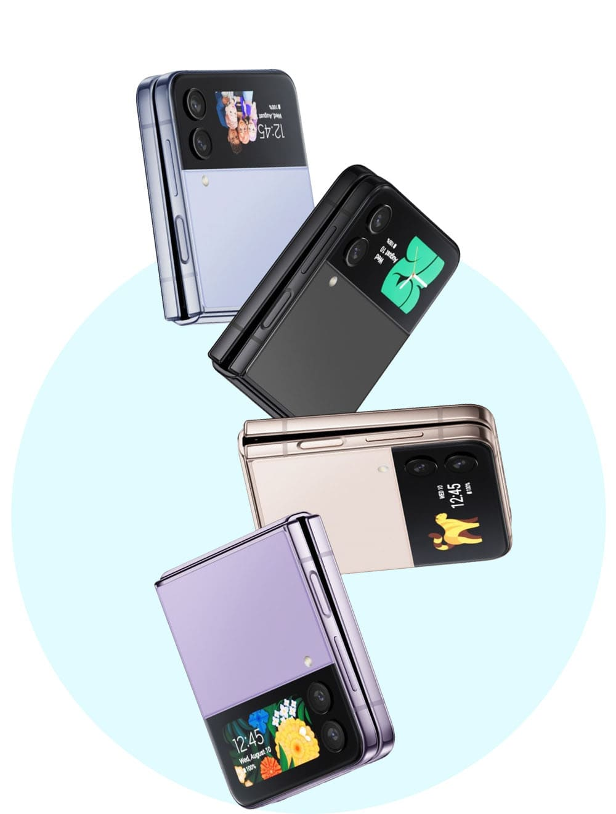
Click para ver más
+
Samsung Galaxy Z Flip4
-
Por extender al mercado masivo y mejorar cada vez más el
formato de smartphones con pantallas plegables.
-
Con 1.059 euros, es el plegable más barato y cuesta
menos que otros móviles convencionales.
-
Responde a las necesidades de usuarios que buscan
teléfonos más pequeños con un formato muy compacto.
Sony WH-1000XM5
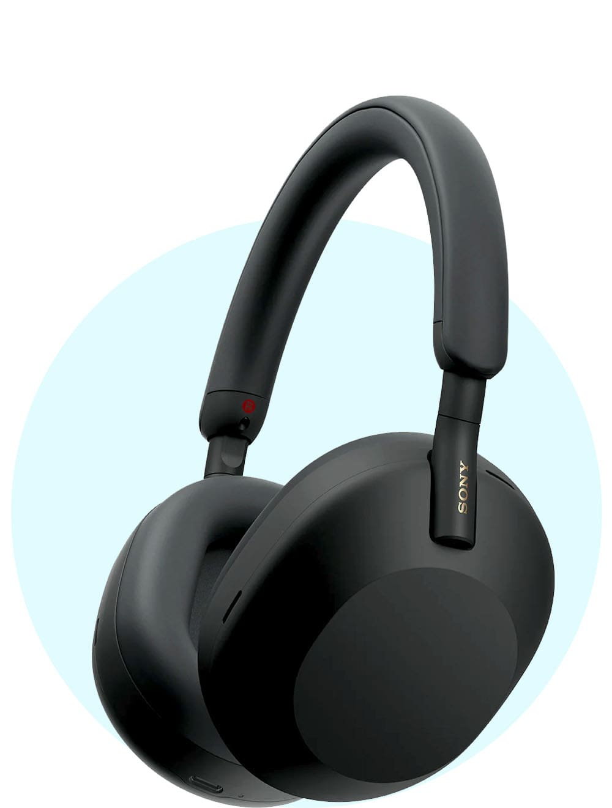
Click para ver más
+
Sony WH-1000XM5
-
Por su calidad de sonido líder en la industria de
auriculares.
-
Llevan la delantera en cuanto a cancelación de ruido,
que además es cada vez más inteligente y adaptada a cada
situación.
-
Cambian su diseño por primera vez y logran ser más
ligeros y cómodos.
Xiaomi 12 Pro
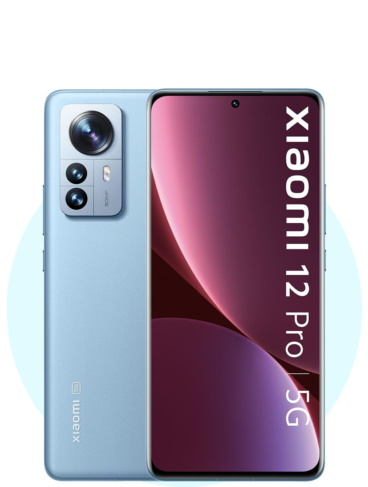
Click para ver más
+
Xiaomi 12 Pro
-
Supone un salto hacia delante en la gama alta de Xiaomi
que le acerca a la competencia.
-
Su carga rápida (llega al 100% en 17 minutos) es de las
mejores del mercado.
-
Tiene la mejor cámara en un móvil de Xiaomi hasta el
momento, con 3 sensores de 50MP.
Solución tecnológica
Proyectos disruptores de alcance masivo que definen un nuevo mundo.
Bizum
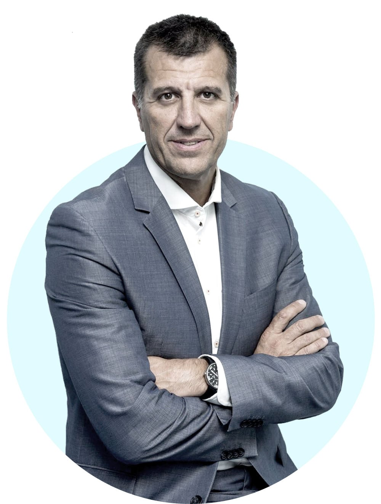
Click para ver más
+
Bizum
-
Esta app bancaria que permite transferir dinero de forma
inmediata nació en 2015 y tiene 21 millones de usuarios
activos y 35.000 comercios.
-
Cuenta con una plataforma para dar a conocer la labor
social de las organizaciones y ayudar a financiar sus
proyectos vía donaciones.
-
Sólo en 2021, sus usuarios realizaron donaciones por 15
millones de euros. El 80% de los españoles menores de 35
años utiliza la aplicación.
Change Dyslexia
Click para ver más
+
Change Dyslexia
-
Fundada en 2017, ha impulsado un test y herramientas
para tratar la dislexia, un trastorno del aprendizaje de
la lectoescritura.
-
El objetivo es dar soporte al afrontar dificultades de
lectoescritura, el bajo rendimiento o el abandono
escolar provocados por la dislexia.
-
Premiada por la Unesco, trabaja en una versión en
catalán y en una herramienta que facilitará el
aprendizaje del inglés.
Gataca
Click para ver más
+
Gataca
-
Trabaja en la articulación en España de un proyecto
europeo para implantar un sistema de identificación
digital para los 27.
-
Colabora en este proyecto con la Secretaría General de
Administración Digital y la Fábrica Nacional de Moneda y
Timbre.
-
El sistema de identidades digitales soberanas va a ser
estratégico en los mercados que todavía no están
regulados como los NFT y los DeFi.
Playtomic
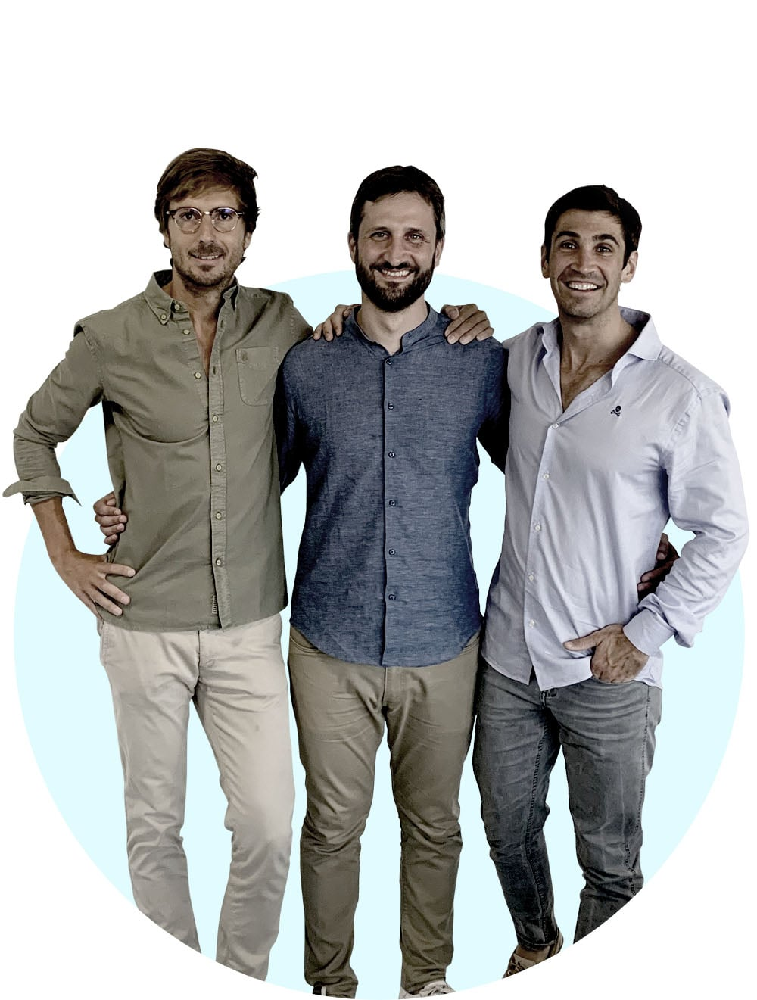
Click para ver más
+
Playtomic
-
Es una aplicación que une a desconocidos que buscan
pareja para jugar al tenis y al pádel: facturó 80
millones de euros en 2021.
-
Gestiona cerca de 5.000 clubes por toda España y está
presente en 34 países. Suma más de un millón de usuarios
en todo el mundo.
-
En 2019 y 2020, se construyeron en Europa el mismo
número de pistas de pádel que en los 20 años anteriores.
Smart Business Innovación
Compañías innovadoras que sobresalen por su capacidad de
reinventarse.
AMC Group
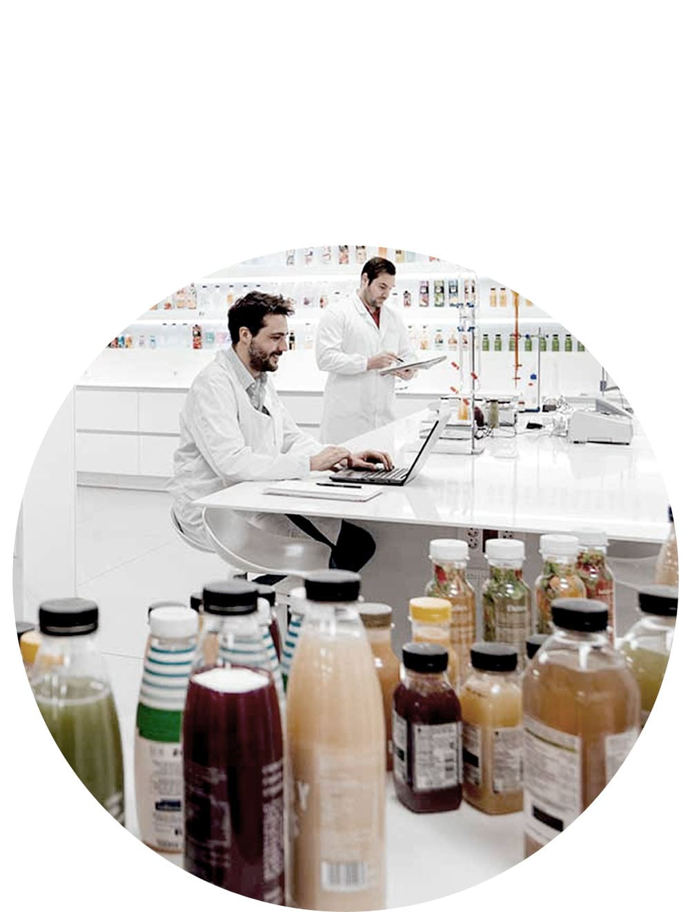
Click para ver más
+
AMC Group
-
El grupo hortofrutícola murciano tiene un centro de
innovación en el que se realizan 40.000 cruces de
semilla al año.
-
Busca nuevos productos a partir de factores como el
sabor, el color, las vitaminas o la resistencia a las
inclemencias del tiempo.
-
Es un referente en el sector ‘agritech’ a nivel mundial.
Entre sus clientes están Walmart, Tesco, Carrefour o El
Corte Inglés.
Correos
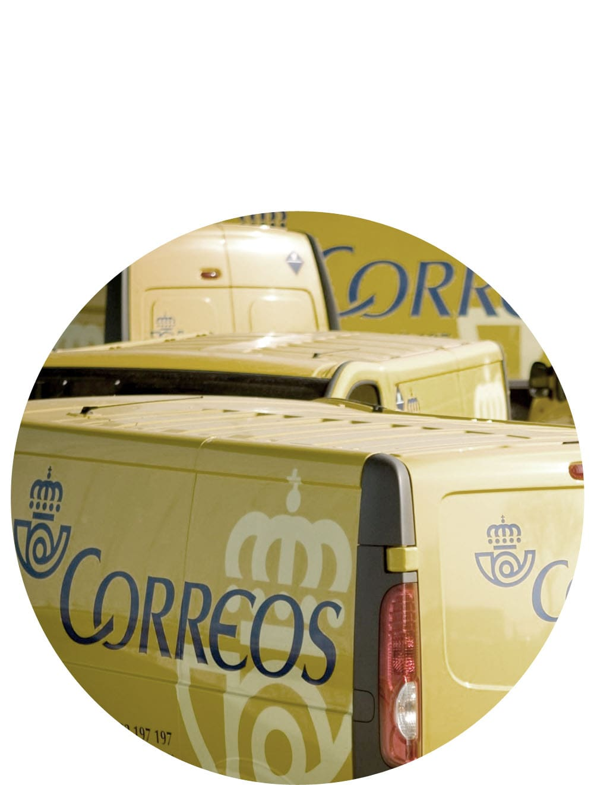
Click para ver más
+
Correos
-
Sus soluciones permiten a los productores locales
gestionar sus ventas en Amazon, eBay o AliExpress sin
tener una web propia.
-
Monitoriza la temperatura, humedad e impactos de los
productos para controlar la cadena de frío a través del
Internet de las Cosas.
-
Con 2.393 oficinas en España, ofrece servicios bancarios
para luchar contra la despoblación en el mundo rural.
Estrella Galicia
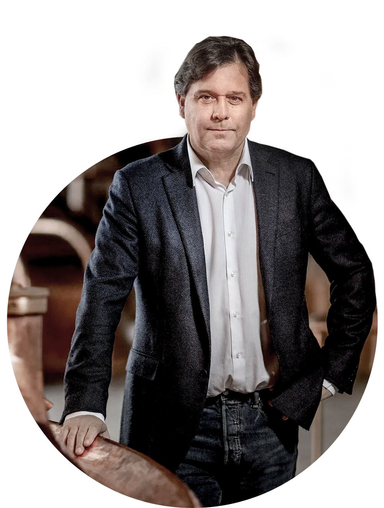
Click para ver más
+
Estrella Galicia
-
Hijos de Rivera, dueña de Estrella Galicia, es una
empresa familiar que inició su actividad en 1906 y está
presente en el negocio del agua.
-
Ha puesto en marcha la Cervecería de la Resistencia
(cervezas artesanales) y un modelo de ‘ecommerce’ en 8
días durante la pandemia.
-
Las cervezas de pulpo, pimientos de padrón o percebes
son algunas de sus recetas más innovadoras.
Libelium
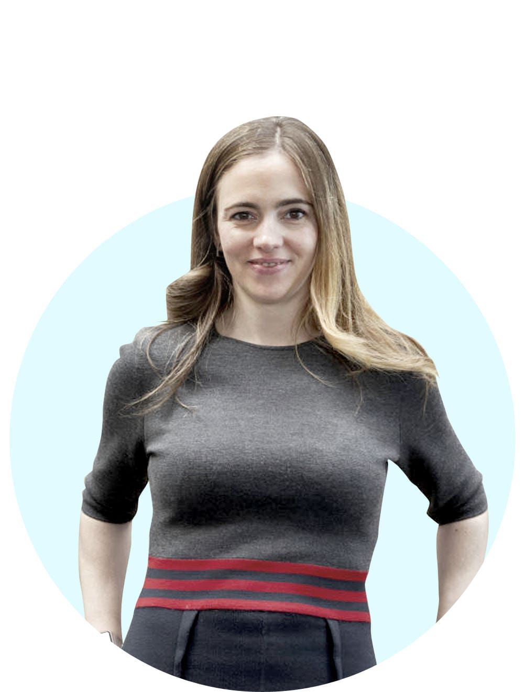
Click para ver más
+
Libelium
-
La compañía nacida en Zaragoza quiere liderar el mercado
del Internet de las Cosas en 3 verticales: ‘smart
cities’, sostenibilidad y ‘agrifood’.
-
Con una plantilla de 80 personas, acaba de comprar HOPU,
que trabaja en monitorización medioambiental y de ruido
en ciudades inteligentes.
-
Uno de sus proyectos es la monitorización de las
condiciones ambientales en el acuario fluvial más grande
de Europa.
Smart Business Transformación
Empresas y proyectos que transforman su sector y el mundo.
Proyecto Life Eggshellence
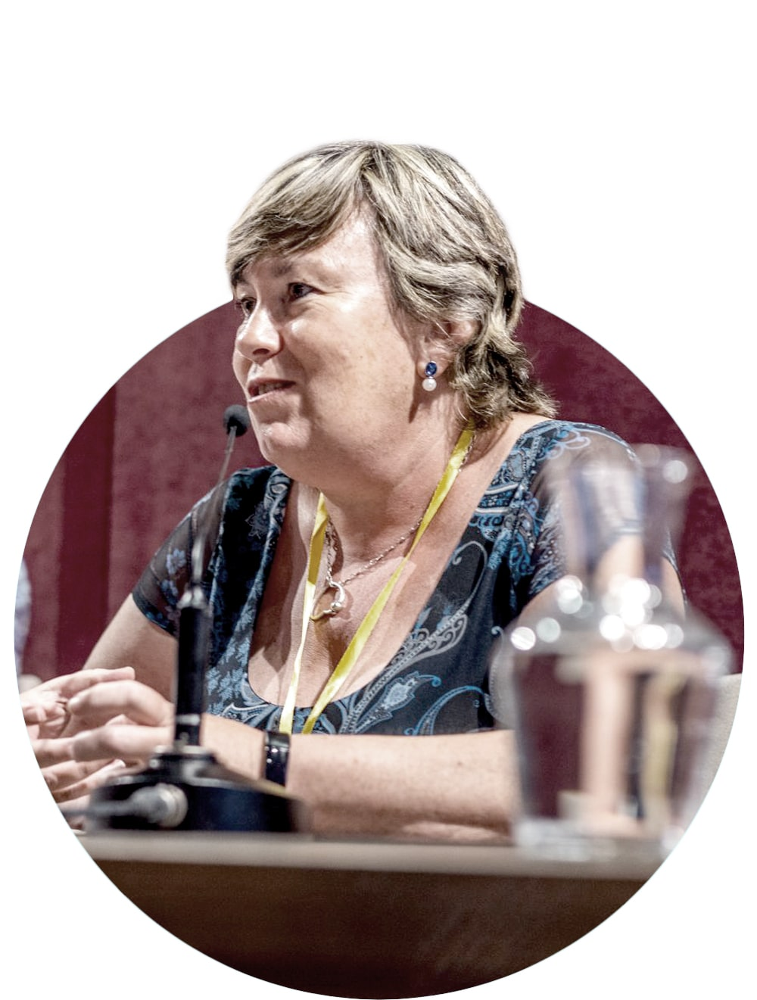
Click para ver más
+
Proyecto Life Eggshellence
-
Es un proyecto europeo que pretende utilizar el
carbonato cálcico obtenido de la cáscara de huevo para
crear baldosas cerámicas.
-
Dirigido por Francisca Quereda, participan empresas como
Maincer, Grupo Euroatomizado o Agotzaina.
-
En España, hay unas 46 millones de gallinas ponedoras;
los españoles consumimos una media de 240 huevos por
persona y año.
Proyecto Machine Biology
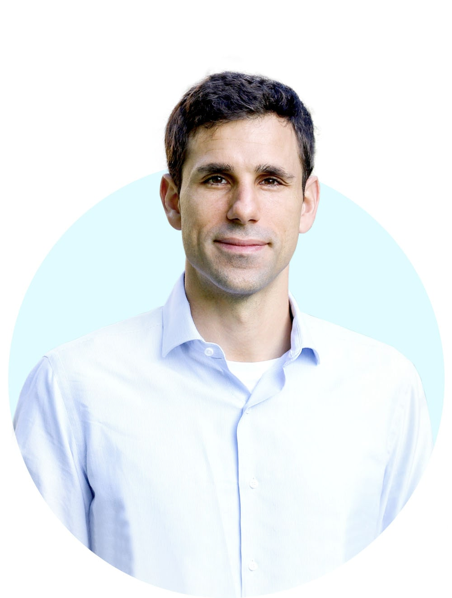
Click para ver más
+
Proyecto Machine Biology
-
El Instituto Tecnológico de Pensilvania enseña a los
ordenadores a fabricar moléculas con propiedades
medicinales y antibióticos.
-
Este grupo está liderado por el español César de la
Fuente, uno de los diez mejores innovadores en ciencias
de la vida y la salud por el MIT.
-
De origen gallego, estudió Biotecnología en la primera
promoción de la Universidad de León y siguió su carrera
en Canadá.
RatedPower

Click para ver más
+
RatedPower
-
Es un software que busca maximizar el potencial de las
plantas solares fotovoltaicas, reducir el coste y
digitalizar la energía solar.
-
Se ha utilizado en más de 150 países y ha ayudado en el
desarrollo de más de 2.000 proyectos que suman 2.000
gigavatios.
-
También ha permitido proporcionar energía a más de 9
millones de hogares, lo que supone una reducción de 12
millones de toneladas de CO2.
Seabery
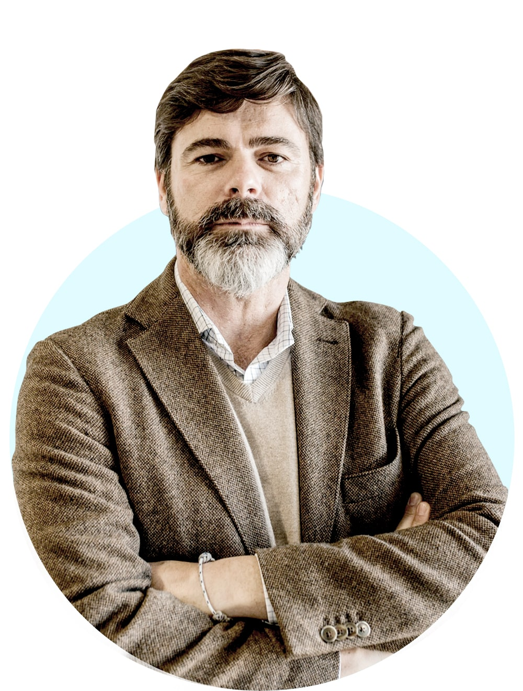
Click para ver más
+
Seabery
-
Esta empresa con sede en Huelva centra su actividad en
la formación en el sector industrial.
-
Utiliza procesos de realidad aumentada y cuenta con un
simulador para aprender a soldar.
-
Fundada en 2009 y presente en 75 países, trabaja con
compañías como BMW, Mercedes, Siemens o Alstom.
Mobility Insider
Un nuevo concepto de movilidad para una sociedad más sostenible.
Repsol

Click para ver más
+
Repsol
-
Construye en Cartagena la primera planta de
biocombustibles avanzados con una inversión de 200
millones de euros.
-
El biodiésel, biojet, bionafta y biopropano se podrán
utilizar en aviones, barcos, camiones o coches y
reducirán 900.000 toneladas de CO2 al año.
-
Iberia, por ejemplo, ya ha utilizado biocombustible de
la compañía producido con residuos en sus vuelos
transoceánicos.
Waabi
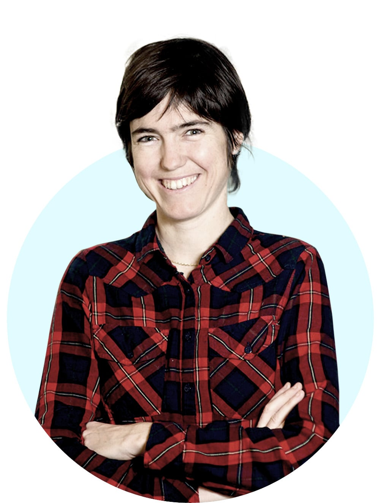
Click para ver más
+
Waabi
-
Raquel Urtasun, ex responsable científica de la unidad
de tecnologías avanzadas de Uber en 2021, puso en marcha
Waabi en 2021.
-
Dirige uno de los laboratorios de conducción autónoma
más prestigiosos del mundo, en la que Waabi centra su
actividad.
-
Es una de las 100 personas que está cambiando el mundo
de los negocios, según Insider.
Wallbox
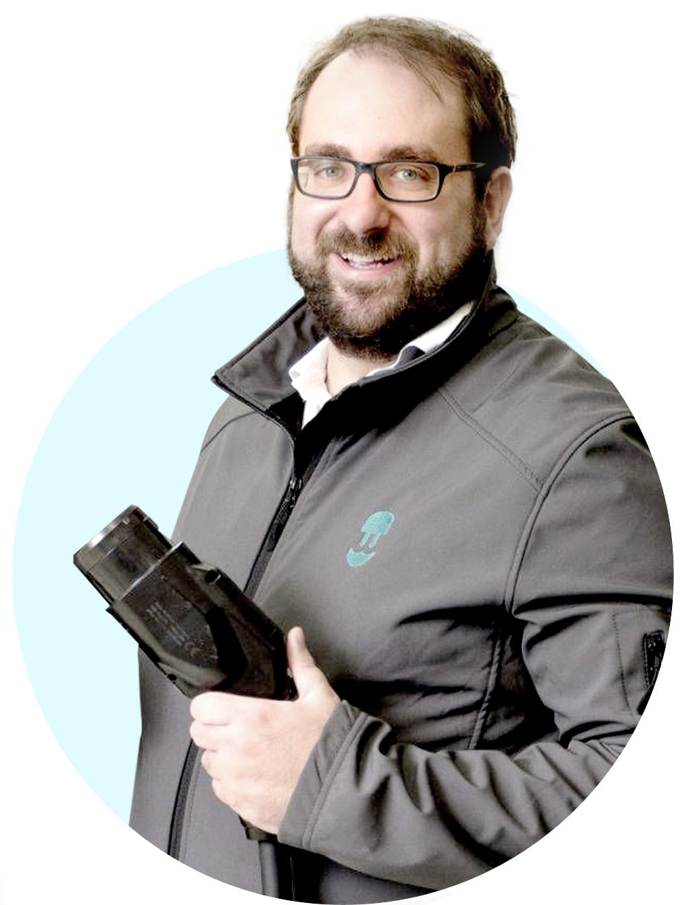
Click para ver más
+
Wallbox
-
Unicornio español que cotiza en EEUU desde 2021, quiere
convertirse en un gestor de energía para hogares y
empresas.
-
Su cargador bidireccional Quasar 2 permite suministrar
la energía de la vivienda al coche eléctrico y al revés.
-
En caso de corte de electricidad, el coche puede aportar
energía hasta 3 días. Nissan, Hyundai, Mercedes o
Iberdrola son algunos de sus clientes.
Zeleros
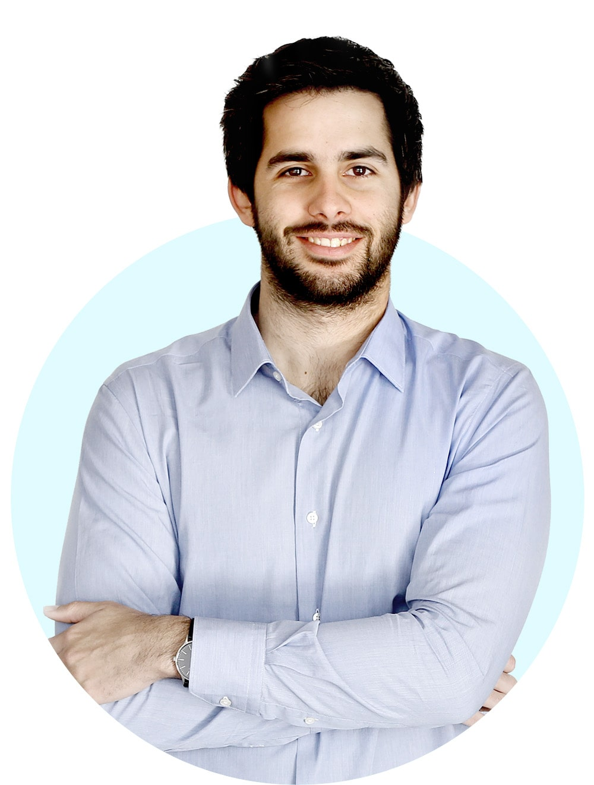
Click para ver más
+
Zeleros
-
Ha creado un prototipo de sistema de transporte de
contenedores autónomo que se empezará a probar este año
en Valencia.
-
La empresa nació del equipo universitario que ganó la
competición organizada por Elon Musk para dar con la
mejor propuesta de ‘hyperloop’.
-
Ha recibido el Premio Europeo de Movilidad respaldado
por el Banco Europeo de Inversiones (BEI).
Organización & Trabajo Flexible
Iniciativas innovadoras con impacto positivo en el talento de las
organizaciones.
HPE Enterprise
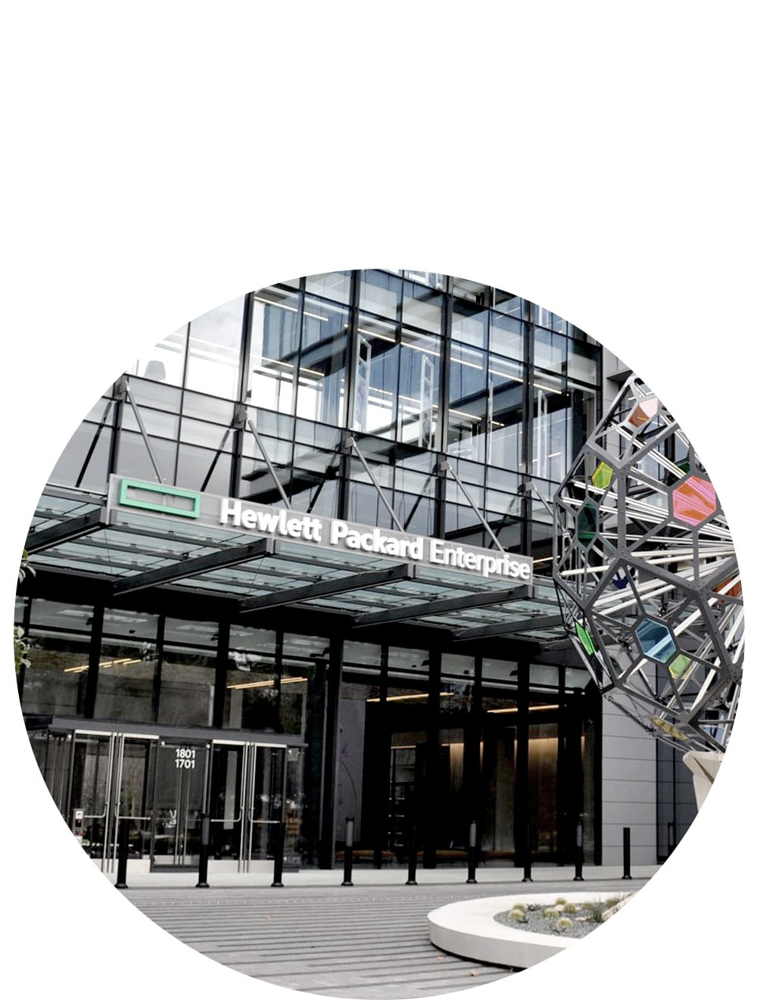
Click para ver más
+
HPE Enterprise
-
Programa Edge-to-Office en España, una iniciativa para
redefinir la cultura del espacio del trabajo.
-
Herramientas, nuevos puntos de encuentro en la oficina,
programa wellness friday, suscripciones a Headspace y
Wellbeat
-
Día de agradecimiento a los miembros del equipo: es un
impulsor clave del uso de la oficina, atrae a un 20% más
de personas que otro día.
Gomarco
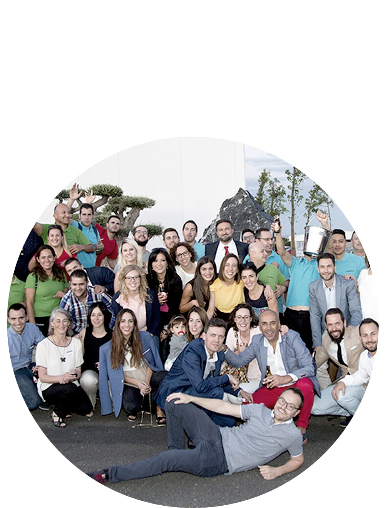
Click para ver más
+
Gomarco
-
Plan sostenibilidad-salud del empleado alineado con la
naturaleza de la empresa, que fabrica colchones y tiene
su sede en Murcia.
-
Un grupo de empleados de diferentes departamentos (10-12
personas) se reúne todos los jueves en la zona VIP de la
empresa y se les invita a un desayuno para que se
conozcan.
-
En esas reuniones se fomenta el compañerismo y la
empatía; liderada por el departamento de recursos
humanos, esta iniciativa pone en valor las sinergias
entre departamentos.
Leroy Merlin
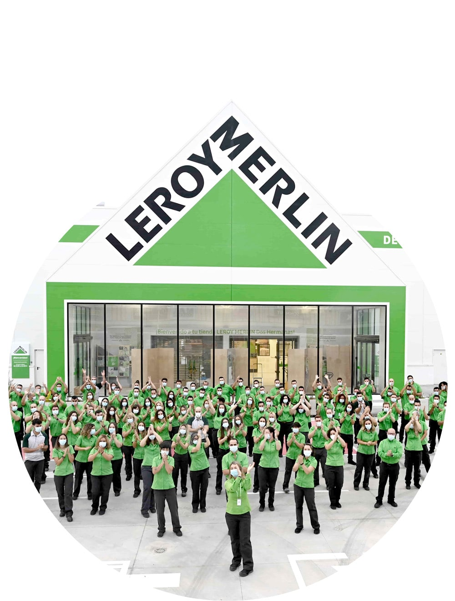
Click para ver más
+
Leroy Merlin
-
Metodología ALPHA (ágil, líquido, flexible, híbrido y
adaptado) para los trabajadores de oficina en un modelo
con dos días a la semana en remoto.
-
Prima de Bienestar Financiero extraordinaria de 500
euros para contribuir a la ‘cuesta de enero y febrero’
de sus 16.000 colaboradores.
-
Fue una de las primeras empresas del sector en implantar
una Política de Desconexión Digital (con independencia
de categoría o nivel jerárquico).
Personio
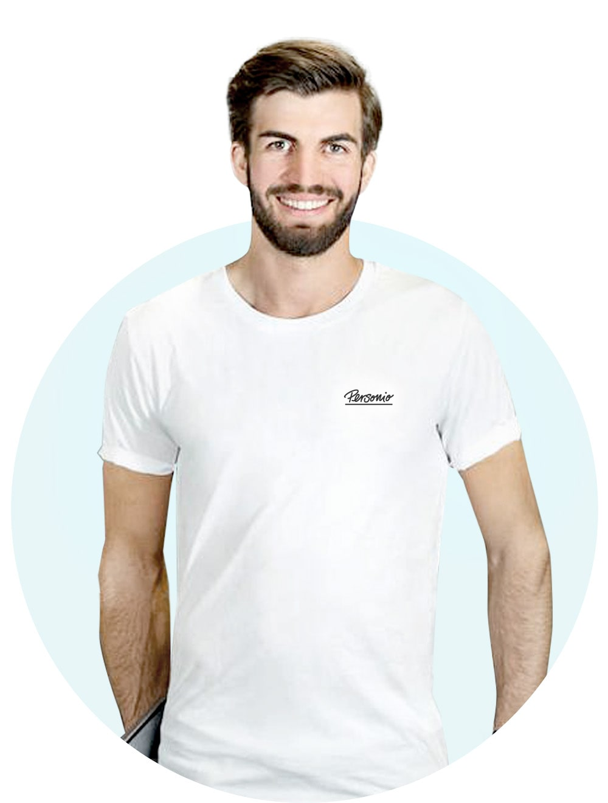
Click para ver más
+
Personio
-
Cada empleado puede tomar sus propias decisiones de
viaje, firmar contratos o comprar software por una suma
de 5 cifras por mes.
-
La cuantía aumenta con la antigüedad en esta empresa
alemana de software de recursos humanos.
-
Autoevaluación de cómo ha sido el trabajo de los últimos
6 meses a nivel de resultados y de soft skills en
empleados, ‘managers’ y alta dirección.
Better Capitalism
Firmas que crean valor a empleados, clientes, accionistas y a toda
la sociedad.
Heura
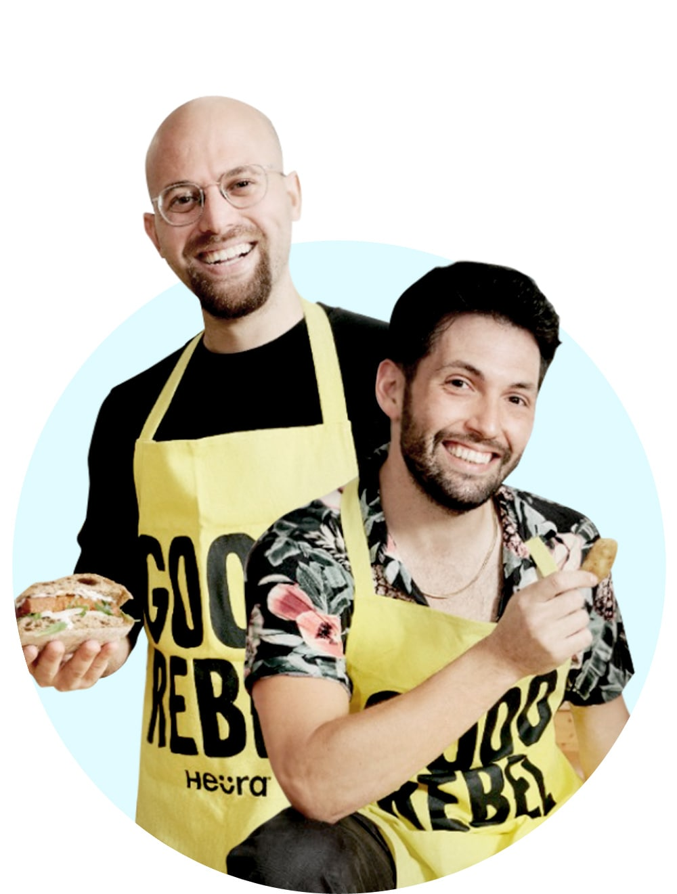
Click para ver más
+
Heura
-
Compañía de proteína alternativa y carne vegetal que
distribuye sus productos en 14.000 puntos de venta en 20
países.
-
Ahorra un 99% de agua y un 79% de los recursos
destinados a alimentar el ganado y reduce un 79% las
emisiones de CO2.
-
Tiene el certificado B Corp en España (compañías que
cumplen con los estándares más altos de impacto social y
medioambiental).
Ikea
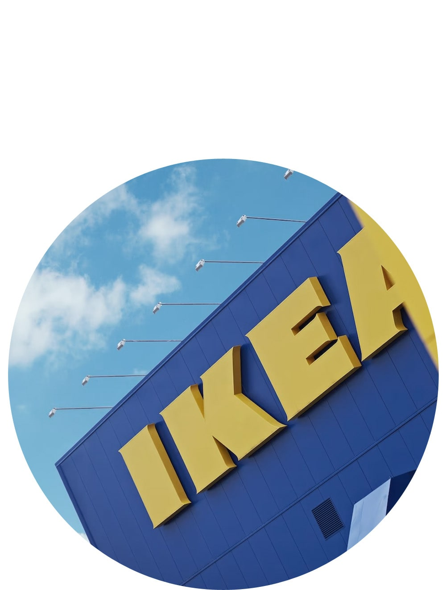
Click para ver más
+
Ikea
-
La cadena de muebles es un referente en sostenibilidad y
en valores como la diversidad, la integración y la
igualdad.
-
Ha incorporado nuevas bombillas LED que reducen un 35%
el consumo energético y eliminará al 100% los plásticos
del empaquetado en 2028.
-
Tiene un programa de recompra de muebles (155.000
artículos en 2021) y servicios de suscripción para
impulsar la circularidad.
Marsi Bionics
Click para ver más
+
Marsi Bionics
-
Ha desarrollado el primer exoesqueleto pediátrico, una
tecnología que puede ayudar a caminar a niños con
discapacidad.
-
El proyecto arrancó en 2009 con el objetivo de dar
respuesta a los 17 millones de familias que sufren esta
problemática en todo el mundo.
-
Elena García, ingeniera robótica y científica del CSIC,
ha recibido el premio de la Oficina Europea de Patentes
por esta innovación.
Recover
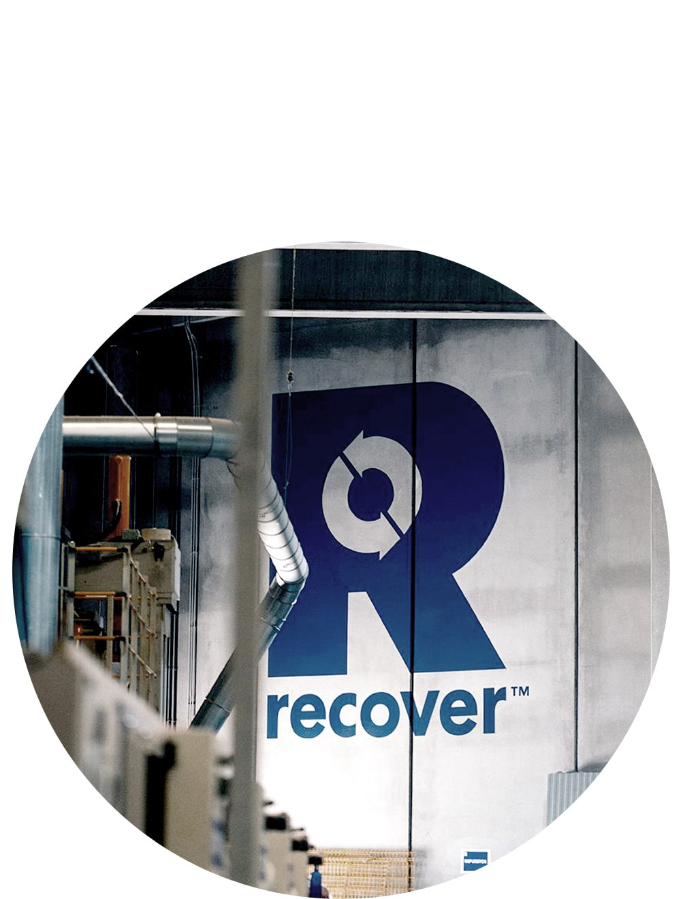
Click para ver más
+
Recover
-
Su fibra de algodón reciclado patentada reduce la
intensidad de carbono y agua de la cadena de suministro
de la ropa.
-
Respaldada por Goldman Sachs, prevé alcanzar un ahorro
de hasta 5 billones de litros de agua al año en 2026.
-
Nacida de la escisión del fabricante español Hilaturas
Ferre, trabaja con Primark, C&A o Inditex.